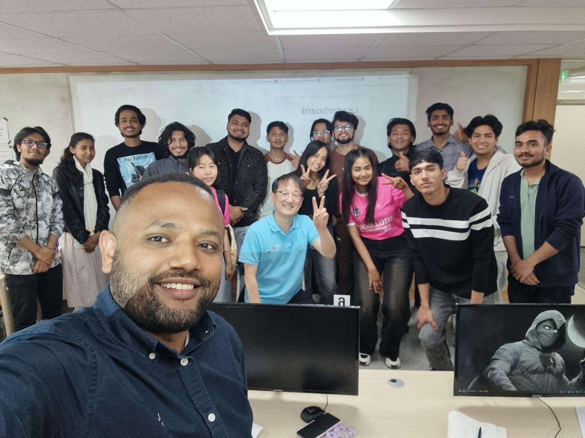
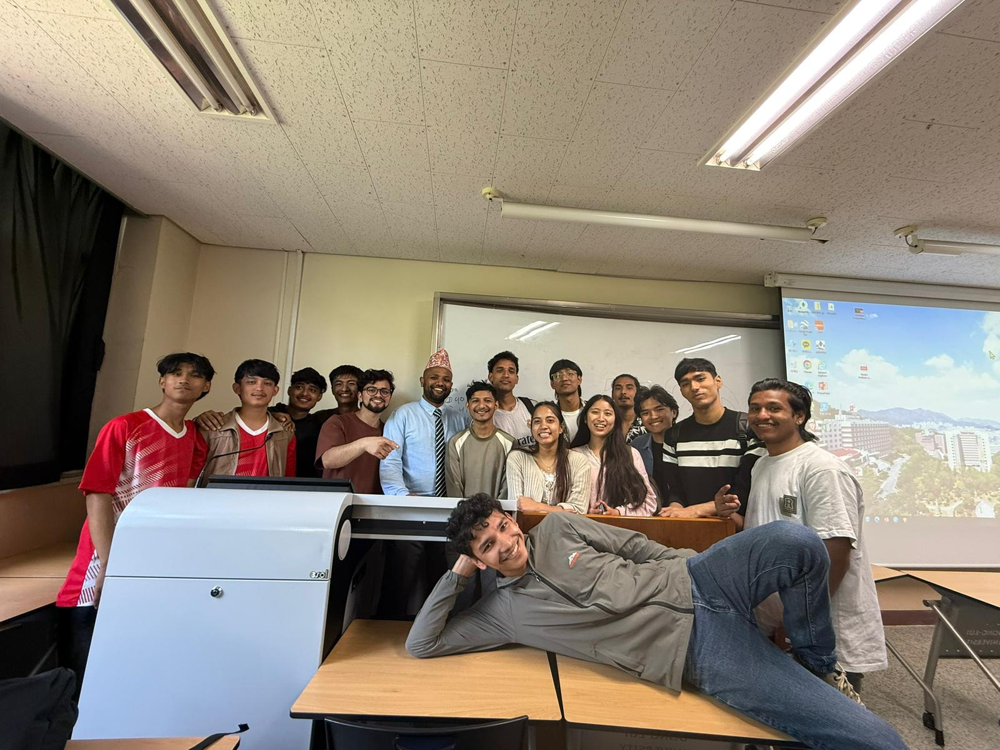
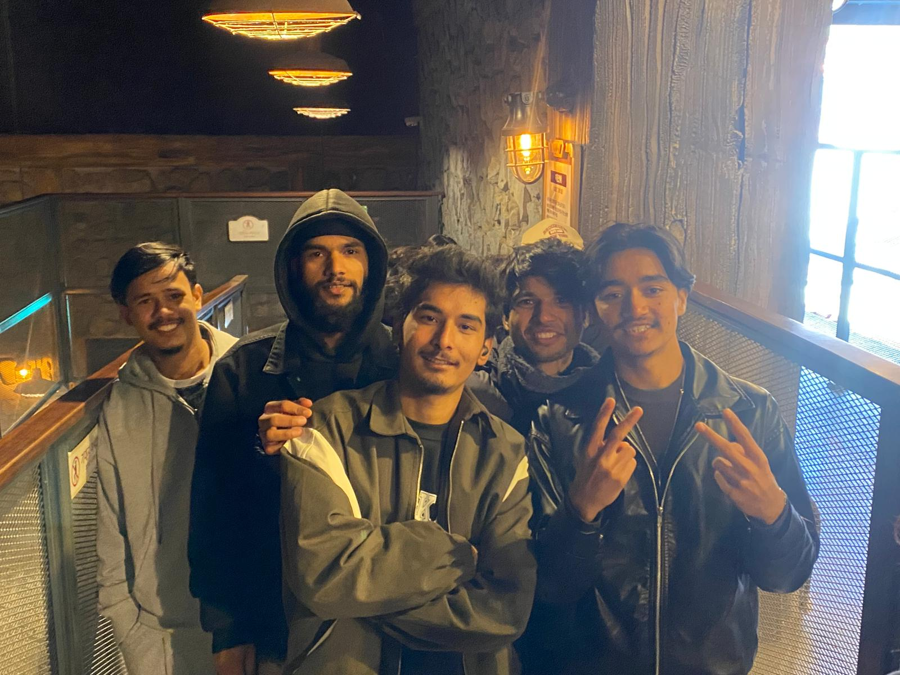

Student Technology Showcase
Students present programming and intelligent computing projects developed through hands-on coursework.
Highlights from student projects, academic activities and the Intelligence Computing community.

Students present programming and intelligent computing projects developed through hands-on coursework.

International students connect through academic and cultural activities at Dong-Eui University.

A department field activity gives students new perspectives and opportunities to learn together.